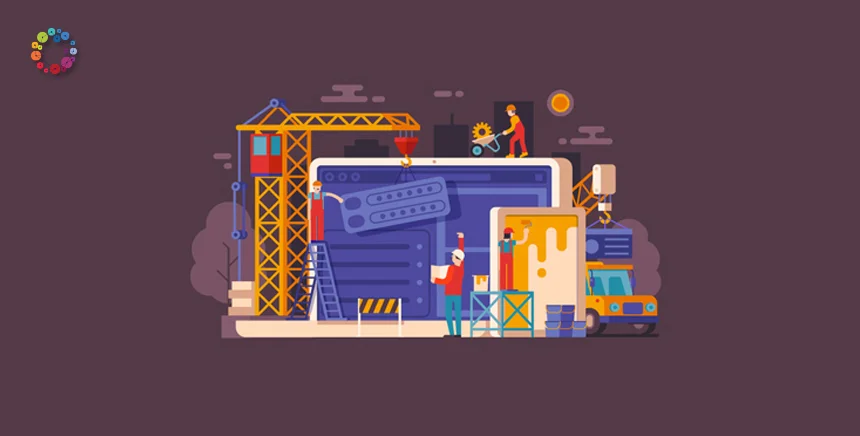
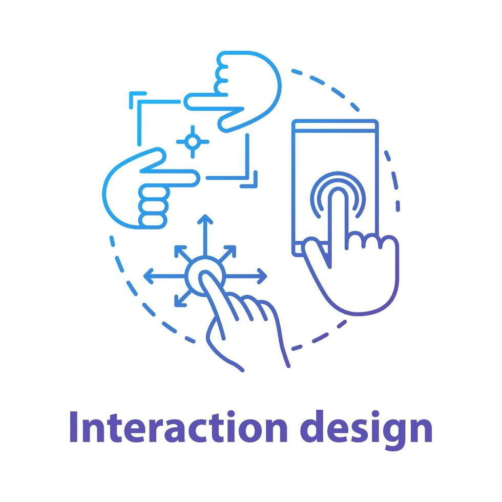

Cuando la interfaz falla, la experiencia se vuelve cansada y lenta.
¿Prefieres escuchar el contenido?
Diseño de Interacción (IxD): la arquitectura de la eficacia
El IxD transforma órdenes humanas en respuestas digitales claras, fluidas y memorables.

Introducción
Imagina lo siguiente. Tienes que hacer una tarea súper importante y necesitas buscar información con urgencia. Has consultado decenas de páginas y todas tienen algo en común: son confusas y tediosas de ver. La pantalla de tu computadora o dispositivo se siente llena de bloques de texto, saturada de información tosca y sin orden aparente.
Te encuentras resignado, dispuesto a rendirte. Pero de pronto ingresas a un último sitio y algo cambia. Al posar el cursor sobre un concepto, el texto se expande suavemente. Al deslizarte, los elementos se mueven con una fluidez casi orgánica. Y cada clic es acompañado de una respuesta eficaz.
¿Qué es el IxD?
El diseño de interacción es el campo del desarrollo web que se encarga de crear sitios que interactúen apropiadamente con el usuario sin dejar de ser atractivos visualmente e intuitivos. Se centra en crear portales que se vean bien, respondan correctamente y sean fáciles de navegar.
Para entender el IxD, basta pensar en lo que ocurre cuando se olvida. Un botón puede no responder, congelar la página o generar una acción doble. En cambio, un buen diseño de interacción muestra de inmediato que el sistema recibió la orden.
Retomando el ejemplo anterior, el botón cambia de color instantáneamente, aparece un indicador de carga y después se transforma en una confirmación visual clara.
¿Dónde más se aplica?
Para que un sitio web funcione bien, el Diseño de Interacción trabaja detrás de escena en áreas muy específicas del día a día digital:
- Usabilidad y Navegabilidad: lograr que encontrar información o desplazarte entre páginas sea intuitivo.
- Legibilidad y Jerarquía Visual: acomodar textos, tamaños y contrastes para facilitar la lectura.
- Feedback Dinámico: asegurar que cada botón, menú o formulario dé una respuesta inmediata.
- Consistencia: mantener las mismas reglas del juego en todo el sitio.
- Accesibilidad: diseñar pensando en todas las personas, incluyendo quienes tienen alguna discapacidad visual o motriz.
Dominar estas aplicaciones es lo que separa a una página frustrante de una experiencia que da gusto usar.
De la frustración a la fluidez
Esta secuencia muestra algo muy común: primero la frustración frente a una interfaz confusa, luego la claridad de un diseño que responde bien y termina en un uso cotidiano sin esfuerzo.
Con mejor estructura visual, el usuario entiende qué hacer y dónde hacer clic.
En móvil, los gestos y tiempos de respuesta definen toda la sensación de control.
Cuando el IxD está bien resuelto, la tecnología se siente natural en la vida diaria.
Los tres pilares fundamentales
Los diseñadores interactivos no crean pantallas por intuición; se basan en leyes de comportamiento. Estos son los tres conceptos clave:
Feedback
Es la respuesta inmediata del sistema a tu acción. Sin feedback, el usuario se siente ciego.
Affordance
Son las pistas visuales que te dicen cómo usar algo sin necesidad de un manual.
Constraints
Son límites inteligentes que guían al usuario y evitan errores innecesarios.
Conclusión
El IxD es el arte de transformar las órdenes humanas en respuestas digitales. Como futuros diseñadores multimedia, el trabajo no consiste en llenar las pantallas de adornos visuales, sino en construir puentes invisibles que conviertan la frustración en experiencias fluidas, intuitivas y memorables.
La próxima vez que uses una app y todo funcione a la perfección, ahí hay un gran trabajo de IxD. Y pronto, podrías ser tú quien diseñe esas conversaciones.
Galería


Referencias
- Creative Campus. (2024, febrero 20). ¿Qué es y para qué sirve el diseño de interacción? Universidad Europea Creative Campus. https://creativecampus.universidadeuropea.com/blog/que-es-diseno-interaccion/
- Diseñador de interacción: quién es, qué hace y cómo llegar a serlo. (s. f.). Ied.es. https://www.ied.es/profesiones/disenador-de-interaccion
- Guía del diseño de interacción: conoce el IxD, sus principios, procesos y características. (s. f.). Analoghq.ai. https://analoghq.ai/blog/es/diseno-de-interaccion/
- Kambrica. (2020, 15 julio). ¿Qué es Diseño de Interacción? [Vídeo]. YouTube. https://www.youtube.com/watch?v=3Crq3mLOF-k